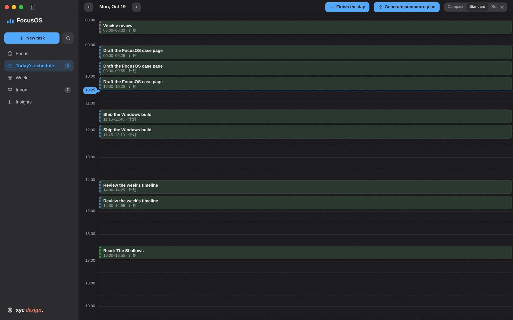
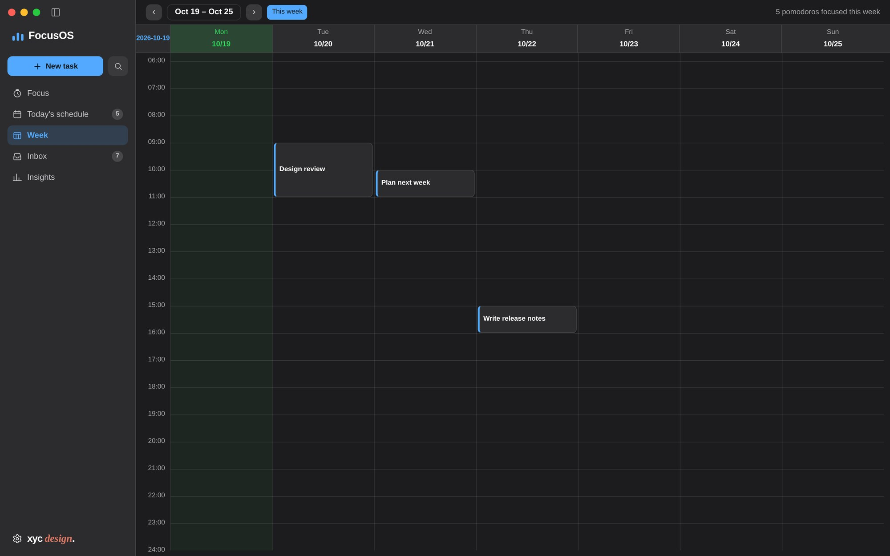
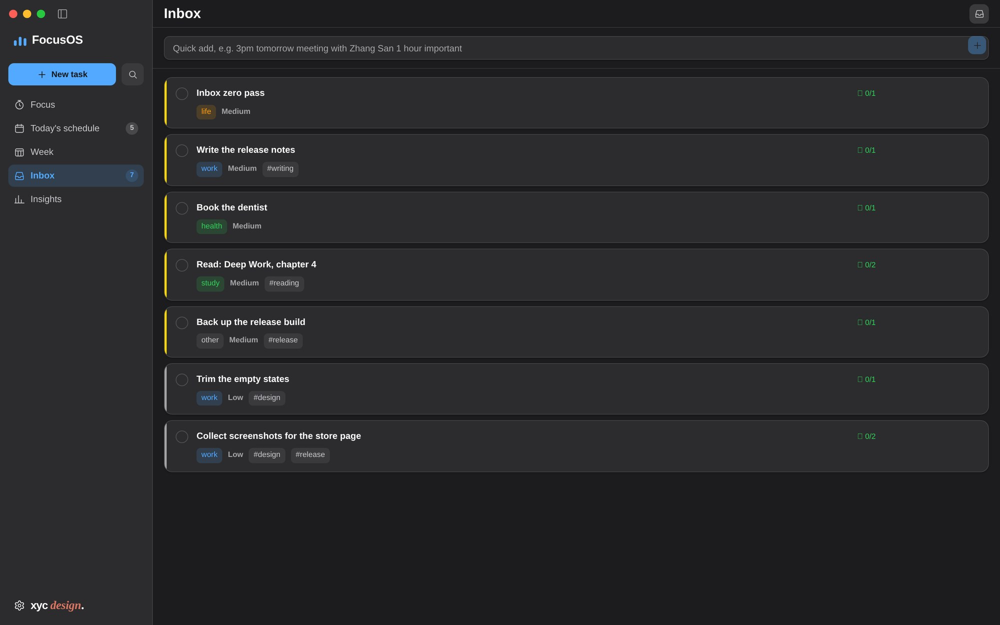
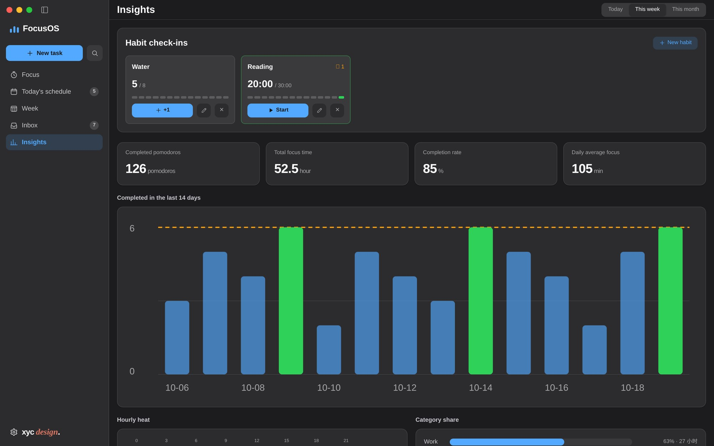
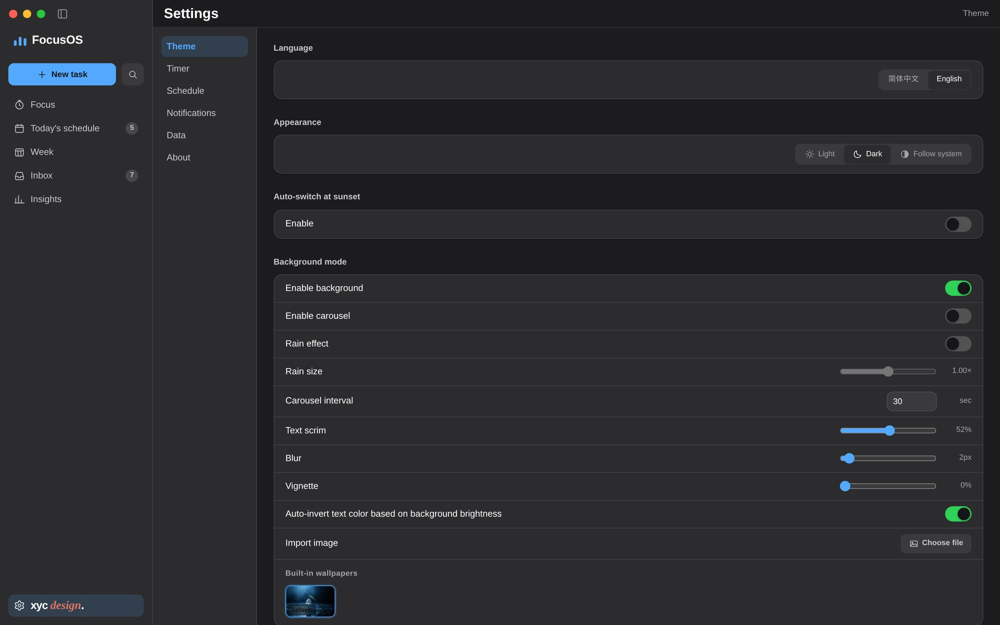

01Focus view
One number, one ring, one task. Put a photograph behind it and the controls fade when the mouse rests; the countdown stays the only bright thing.
Every pomodoro app I tried solved half the problem. Timers knew nothing about my calendar; task managers knew nothing about the hour I was in.
FocusOS puts both in one window. A 220-pixel sidebar holds the plan; the rest of the screen holds the one thing I am doing.
It is also a constraint exercise: one person, two platforms, zero UI, chart or native dependencies.
“Design the timer as a place, not a widget.” Working note, 2025
Every screen below is a capture of the running app. Same window, six jobs: run the timer, plan the day, read the week, empty the inbox, look back, tune the machine.
One number, one ring, one task. Put a photograph behind it and the controls fade when the mouse rests; the countdown stays the only bright thing.

A 24-hour canvas. Tasks expand into 25-minute plan blocks, the current hour is marked, and the whole day can be dragged into a different shape.

Seven columns on one hour scale, today tinted. Tomorrow's work is visible without opening a second app, and the footer counts the pomodoros already banked.

Type “3pm tomorrow meeting 1 hour #work” and it becomes a dated, timed, tagged task. Everything unplanned waits in the inbox until it has an hour.

Habit check-ins, pomodoros, focus hours and completion rate, then a 14-day chart, an hour heatmap and a category share — all drawn by hand, no chart library.

Six panes — theme, timer, schedule, notifications, data, about. Background mode lives here too: scrim, blur, vignette and whether the text should flip colour with the photo.
Remaining time is always endsAt − now(). The renderer never counts — it only draws.
AuthorityTimer state lives only in the main process. A UI reload cannot disturb a running phase.
DurabilityTemp file, then rename. 500 ms throttle, schema migrations, automatic backup on corruption.
PortabilityPlatform chrome is measured once and injected as CSS variables. Components never branch on OS.
No component library — so every token, every size and every contrast ratio had to be written down.
The build is not notarised, so Gatekeeper blocks it. Drag FocusOS into Applications, then run these two lines in Terminal — once is enough.
Only removes the quarantine flag from the app on this machine.$ xattr -dr com.apple.quarantine /Applications/FocusOS.app $ open /Applications/FocusOS.app